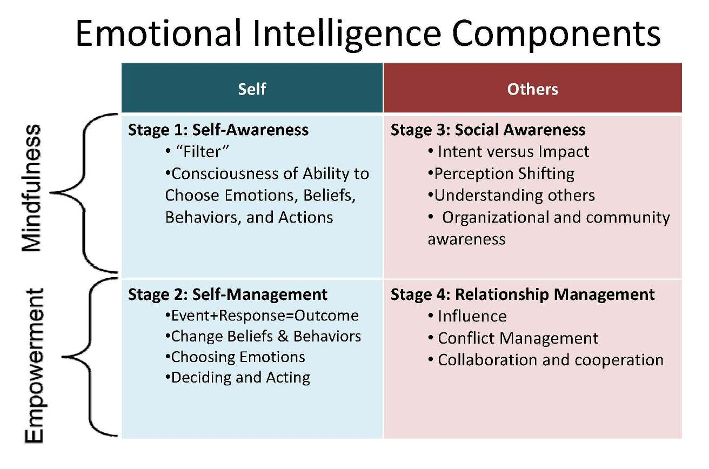

Conflict is unavoidable in life, we cannot control that.
How we deal with conflict, however, is within our control.
The most recent conflict in my life was due to a fun little situation at T-Mobile. I had switched To set the scene - I was switching over to T-Mobile because they were advertising their policy of paying your Early Termination Fee (ETF) if you broke your old contract. I made the switch, and went on with my life.
Unfortunately, the person who helped me switch did not inform that there were a number of steps I had to take within a deadline period to qualify for the rebate. I found out when I contacted T-Mobile to find out why I had received an ETF bill a month later from my old carrier. So sorry, I was told, there is nothing we can do, the deadline has passed.
This was the beginning of several related conflict situations, as I was passed on to different representatives over the course of the next week, on the phone and in the store.
I was feeling enraged since somebody's negligence was costing me over $300.
In the end, after a week of daily struggle, I was approved for the rebate. I actually owe this to my strategy of dealing with the conflict situation.
I remained assertive and relentless, but no matter how much I wanted to show my anger and frustration, I did my best to stay calm and respectful of the person I was dealing with. I knew that doing otherwise would not only probably get me kicked out of the store, but make the other person shut down and not want to help me. It would not have any positive consequences, purely negative.
I even had one representative tell me that she commended me for the way I was handling myself, because if she were in my situation, she would not have been pleasant to deal with.
Ultimately, I'm sure that I would have been out $312 if I had not consciously attempted to exercise Emotional Intelligence.
Try it out for yourself!